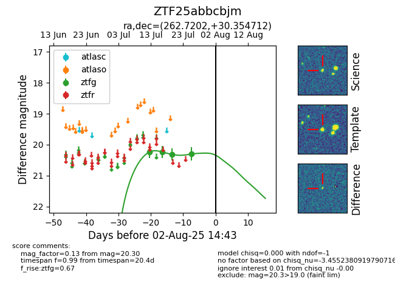

Target ZTF25abbcbjm at 2025-08-02 14:43, see:
FINK: fink-portal.org/ZTF25abbcbjm
Lasair: lasair-ztf.lsst.ac.uk/objects/ZTF25abbcbjm
ALeRCE: alerce.online/object/ZTF25abbcbjm
alt names
ZTF25abbcbjm (ztf,fink)
coordinates:
equatorial (ra, dec) = (262.7202,+30.35471)
galactic (l, b) = (54.1347,+29.65997)
photometry
last ztfg=20.30
4 ztfg detections
